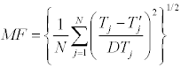

Refinement and Synthesis Tools
Refinement and Synthesis Tools
The refinement and synthesis procedures in OptiLayer are aimed at designing optical coatings with specific spectral (angular) characteristics by optimizing a merit function through the variation of construction parameters such as the number of layers, materials used, and their thicknesses. OptiLayer offers several refinement modes that utilize powerful optimization routines to achieve the desired coating design. Some of the optimization routines used in OptiLayer include:
Modified Dumped Least Squares: This optimization method is used to minimize the sum of squares of the differences between the observed and predicted values, with modifications to enhance convergence and stability.
Sequential Quadratic Programming: This optimization technique involves solving a sequence of quadratic subproblems to iteratively improve the solution and converge towards the optimal design.
Newton Method: The Newton method is an iterative optimization algorithm that uses second-order derivatives to find the minimum of a function. It converges quickly and efficiently to a local minimum.
Hyper Newton Method: The Hyper Newton method is an extension of the Newton method that incorporates additional information or constraints to improve convergence and stability in complex optimization problems.
By utilizing these advanced optimization routines, OptiLayer allows users to efficiently optimize the design of optical coatings by varying construction parameters and exploring different design possibilities to achieve the desired spectral and angular characteristics. These optimization modes help users achieve optimal coating designs that meet specific performance requirements and maximize overall coating performance.
OptiLayer stands out as a unique thin film software due to its sophisticated analytic algorithms developed by its creators, which offer exceptional convergence rates and accuracy in its optimization routines. All optimization routines in OptiLayer are based on this proprietary know-how, ensuring superior performance in refining and synthesizing optical coatings with desired characteristics. One of the most powerful design techniques available in OptiLayer is the Needle Optimization, which can be used in both manual and automatic modes: In the manual mode, advanced users have the ability to control the needle optimization procedure by selecting insertion points for new layers, performing multiple variations with the needle, and fine-tuning the design process. The automatic mode allows for the needle optimization procedure to run automatically, streamlining the design process. This mode also offers setup options that increase flexibility, such as multiple needle insertions, to further enhance the optimization process. Both manual and automatic modes of the Needle Optimization technique in OptiLayer automatically select optimal layer materials when multiple materials are specified for the coating design, simplifying the design process and ensuring that the best materials are chosen for the desired optical characteristics. Overall, OptiLayer’s unique optimization algorithms and the implementation of the Needle Optimization technique in both manual and automatic modes make it a powerful tool for designing optical coatings with high precision, efficiency, and flexibility in achieving the desired spectral and angular characteristics.
|
Note: The exceptional power of the genuine Needle Optimization technique implemented in OptiLayer stems from the unparalleled mathematical expertise developed by the creators of OptiLayer, who have been refining this technique since its inception in 1982 by Professor A.V. Tikhonravov. This extensive experience and knowledge have allowed OptiLayer to leverage the full potential of the Needle Optimization technique, making it a cutting-edge tool for optimizing and designing thin film coatings with exceptional accuracy and efficiency. |
The Gradual Evolution mode in OptiLayer expands the capabilities of the Needle Optimization technique by focusing on finding designs that are highly manufacturable. This mode allows for the generation of a range of designs with varying combinations of key parameters such as merit function value, number of design layers, and total design thickness, enabling users to explore and select designs that meet specific manufacturing criteria. In addition to the Needle Optimization technique, OptiLayer offers other non-local design techniques such as Inhomogeneous Refinement and Random Optimization.
These techniques are particularly valuable for addressing specialized modern design challenges, such as the design of gain flattening filters, and provide additional flexibility and tools to tackle diverse design problems effectively. For designing WDM filters, OptiLayer has developed an extremely efficient automatic design technique tailored specifically to meet the requirements of WDM applications. Like other design options within OptiLayer, the WDM design option leverages proprietary know-how that sets it apart from other thin film software programs, ensuring high-quality results and performance in WDM filter design tasks.
OptiLayer allows users to specify design targets in both Spectral and Angular modes, with the Angular mode being particularly useful when design targets are defined across an angular range.
OptiLayer constructs a merit function automatically in the correspondence with user-specified targets (target values, tolerances and qualifiers). The following formula represents one of the OptiLayer merit function (MF):

Here N is the total number of targets, Tj’ are target values, DTj are tolerances, and Tj are theoretical values of the spectral characteristics calculated for the design loaded in memory.
Targets include:
Reflectance, Back Reflectance, Transmittance, Absorptance for s-, p-, and average polarizations.
Phase shifts on reflection and transmission for s- and p- polarizations.
Differential phase shifts on reflection and transmission.
Group delay and Group delay dispersion for the reflected and transmitted light of s- and p- polarizations.
User-defined targets
Combinations of various targets listed above
In OptiLayer’s Spectral mode, users have the flexibility to consider targets at a high resolution of up to 8192 spectral points across multiple target pages, with the ability to have up to 99 target pages. This extensive range of spectral points and target pages enables users to explore and optimize complex combinations of various targets for thin film coatings across different spectral ranges. Moreover, within each target page, users can specify targets that correspond to different incidence angles, allowing for the design of coatings tailored to wide spectral and angular range applications. This feature enhances the versatility of OptiLayer in addressing diverse design requirements and optimizing coatings for a broad range of spectral and angular conditions, ensuring that the resulting designs meet specific performance criteria across different operational scenarios.
|
Note: OptiLayer is the only software that implements a completely analytical approach for calculating and optimizing all characteristics, including group delay and group delay dispersion. This enables the design of even the most complicated coatings with the highest level of precision. |
Color Targets can be specified simultaneously at up to 99 incidence angles.
Color targets include:
Chromacities,
CIE YU’V’ 1976,
CIE YUV 1960,
Tristimulus,
Hunter Lab,
CIE L*a*b*
CIE L*u*v*
CIE HºLC
CIE C*hs(uv)
for transmittance, reflectance, back reflectance for any angle of incidence and polarization state.